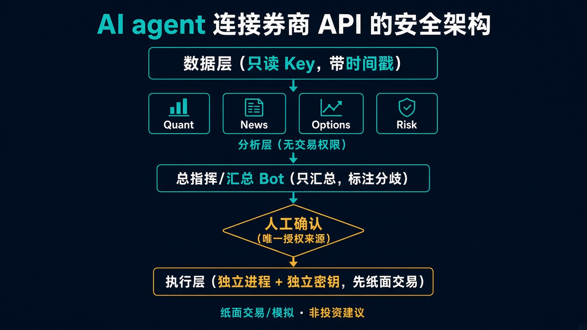

本文是通用技术教学，所有代码均为示意性伪代码，不对应任何真实券商，不含任何真实账户、密钥或持仓信息。文中涉及下单的部分，默认均在纸面交易/模拟账户中演示。
最近不少朋友问：能不能让 AI agent 直接连上券商 API，帮自己看盘、分析、甚至下单？技术上当然可以，但"能做"和"该怎么做"是两回事。这篇文章不讲某一家券商的具体接口，而是讲一套通用的安全架构：数据怎么拿、权限怎么分、密钥怎么管、人在哪个环节必须拍板，以及我在搭建过程中踩过的几个典型坑。
能做的事：
不能（也不应该）做的事：
一句话：让 agent 做信息整理和分析的"副驾驶"，方向盘和刹车永远在人手里。
核心思路是读写分离、层层隔离：读数据的部分权限尽量小，能下单的部分单独隔离，中间必须经过人。

如果你的平台不支持 mermaid，可以看 ASCII 版：
[数据层: 只读key, 带时间戳快照]
|
+-----+------+---------+---------+
| | | |
[Quant] [News] [Options] [Risk] <- 分析层: 只能读，不能写
| | | |
+-----+------+---------+---------+
|
[CIO/Summary Bot] <- 汇总，不下单
|
[人工确认闸门] <- 唯一的授权来源
|
[执行层: 独立进程/独立key/先模拟] <- 与上面所有bot物理或逻辑隔离
几个设计要点：
建议严格按三个阶段推进，每个阶段用不同的密钥：
| 阶段 | 权限 | 用途 | 密钥 |
|---|---|---|---|
| 阶段 1：只读 | 行情、持仓、历史数据查询 | 跑通数据流、验证分析逻辑 | 只读 key |
| 阶段 2：纸面交易/模拟 | 模拟账户下单 | 验证确认流程、订单格式、异常处理 | 模拟账户 key |
| 阶段 3：实盘 | 真实下单（建议限额） | 在前两阶段充分稳定后才考虑 | 实盘 key，仅执行层持有 |
最小权限原则：
为什么要这么麻烦？因为大多数事故都不是"策略错了"，而是"权限给多了"。一个只读 key 泄露，最坏结果是别人看到你的持仓；一个带交易权限的 key 泄露，后果就完全不同了。分阶段、分密钥，本质上是在给每一种可能的错误设置一个"损失上限"。
密钥绝对不能出现在：
推荐做法：环境变量 + .env 文件（本地开发），或者使用云服务商/密码管理器提供的 secret manager（生产环境）。
.env 示例（注意，这里全是占位符）：
# .env —— 只存在本地，绝不提交
BROKER_READONLY_KEY=replace_with_your_readonly_key
BROKER_READONLY_SECRET=replace_with_your_readonly_secret
BROKER_PAPER_KEY=replace_with_your_paper_key
BROKER_PAPER_SECRET=replace_with_your_paper_secret
# 实盘 key 不放在分析环境里，只配置在独立的执行层
.gitignore 示例：
.env
.env.*
*.key
secrets/
logs/
代码里读取：
# 示意代码
import os
from dotenv import load_dotenv
load_dotenv()
READONLY_KEY = os.environ.get("BROKER_READONLY_KEY")
if not READONLY_KEY:
raise RuntimeError("缺少只读密钥环境变量，请检查 .env 配置")
额外两条习惯：日志里不打印密钥（打印前做脱敏）；定期轮换，一旦怀疑泄露立刻吊销重建。
⚠️ 以下代码为示意性伪代码。
broker_client、get_quotes()、get_positions()、place_order()等均为假想接口，请替换为你所用券商官方 SDK 的对应方法，并以其官方文档为准。
# 伪代码 / pseudo-code
from datetime import datetime, timezone
DATA_UNAVAILABLE = "DATA_UNAVAILABLE"
def now_utc():
return datetime.now(timezone.utc).isoformat()
def fetch_quote(client, symbol):
"""拉取单个标的行情，失败时返回 DATA_UNAVAILABLE，绝不编造数字"""
try:
q = client.get_quotes([symbol])[symbol] # 假想接口
return {
"symbol": symbol,
"price": q.get("last"),
"quote_type": q.get("type"), # 如 realtime / delayed / prev_close
"source_time": q.get("timestamp"), # 数据源给的时间
"fetched_at": now_utc(), # 我们拉取的时间
}
except Exception as e:
return {
"symbol": symbol,
"price": DATA_UNAVAILABLE,
"error": str(e),
"fetched_at": now_utc(),
}
def fetch_positions(client):
try:
return {"positions": client.get_positions(), "fetched_at": now_utc()} # 假想接口
except Exception as e:
return {"positions": DATA_UNAVAILABLE, "error": str(e), "fetched_at": now_utc()}
# 伪代码
def summarize_for_bot(quote):
if quote["price"] == DATA_UNAVAILABLE or quote["price"] is None:
return f"{quote['symbol']}: DATA_UNAVAILABLE（{quote['fetched_at']}），本轮不做基于价格的判断"
tag = "【延迟行情】" if quote.get("quote_type") == "delayed" else ""
return f"{quote['symbol']}: {quote['price']} {tag}(源时间 {quote['source_time']})"
同时在给分析 bot 的系统提示里写明："遇到 DATA_UNAVAILABLE 时，必须原样报告，禁止估算、禁止用记忆中的价格替代。"
# 伪代码 —— 默认在纸面交易/模拟账户运行
import uuid
MODE = "PAPER" # PAPER / LIVE，切换到 LIVE 需要单独的配置和密钥
def human_confirm(order):
print("=" * 40)
print(f"[{MODE}] 待确认订单（由人复述后确认）")
print(f" 方向: {order['side']} 标的: {order['symbol']}")
print(f" 数量: {order['qty']} 类型: {order['order_type']}")
print(f" 依据数据时间: {order['data_time']}")
print("=" * 40)
code = uuid.uuid4().hex[:6]
typed = input(f"请完整输入确认码 {code} 以确认，其他任意输入视为取消：")
return typed.strip() == code
def submit_order(exec_client, order):
if order.get("price_ref") == DATA_UNAVAILABLE:
print("依据数据缺失，拒绝提交")
return None
if not human_confirm(order):
print("未确认，订单已取消")
return None
result = exec_client.place_order(**order) # 假想接口，仅执行层持有该 client
log_audit(order, result, confirmed_at=now_utc())
return result
要点：确认码每次随机生成，避免"习惯性回车"；确认动作只能由人在执行层的终端完成，任何 bot 的输出都不能替代这一步。
quote_type，别把昨收当现价。这是多 agent 系统里最容易被忽视的问题：
每次面对 agent 给出的建议，花几分钟过一遍：
坑 1：两份快照，两个价格。
同一时间段拉到的两份数据，价格对不上。排查后发现一份是上一交易日收盘价，另一份是盘中实时价。教训：每条数据必须带 quote_type 和源时间戳，冲突时以更晚的时间戳为准，并在报告里显式标出冲突，收盘后再复核。
坑 2：bot 转述时把计划意思说反了。 一个汇总 bot 在转述上游计划时，把"条件满足才执行"改写成了类似"除非条件满足否则执行"的表达，语义恰好反过来。好在有人工复述确认环节被拦了下来。教训：跨 bot 传递计划用结构化字段（JSON），不要让模型反复用自然语言改写；关键条件由人逐项核对。
坑 3：行情权限被另一台设备占用。 有些券商的实时行情权限同一时间只允许一个终端/会话使用。手机 App 开着时，程序端拿到的突然变成了延迟数据或直接报错。教训：程序要能识别行情类型降级并报警，降级时自动标注"延迟"或返回 DATA_UNAVAILABLE，而不是悄悄用延迟价继续分析。
风险提示：
小结：
让 AI agent 连券商 API，真正的难点不在写代码，而在边界设计：数据层只读、分析层无交易权、执行层独立隔离；权限从只读到模拟再到实盘逐级推进，每级独立密钥；密钥只放环境变量或 secret manager；拿不到数据就说 DATA_UNAVAILABLE；bot 之间不互相授权，人是唯一的授权来源。
下期预告：我们会聊聊如何给 Risk bot 设计一套可配置的规则引擎——仓位上限、集中度、单日最大操作次数这些"硬约束"怎么写成代码，以及如何在纸面交易环境里做异常场景演练。
非投资建议；期权可能全损；模拟/过往表现不代表未来。